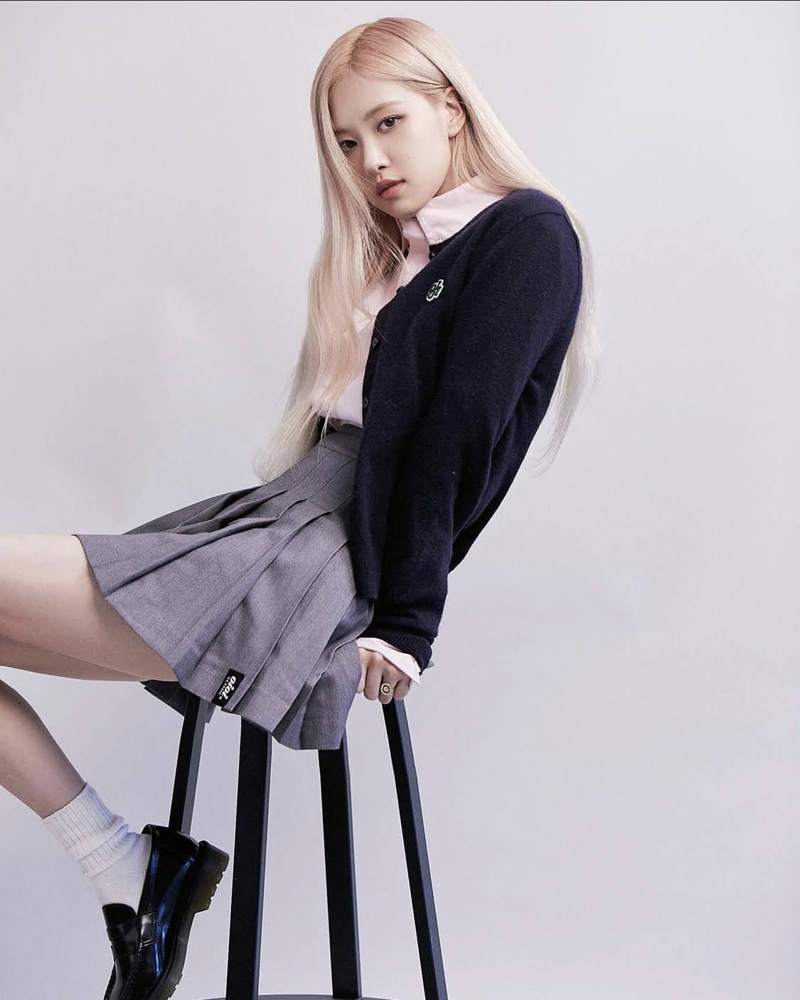

策展主題
顛覆世界的布局
2021商周X啟示出版年中精選，從每一本不同類別的書籍尋找在茫茫人還裡、在忙碌的生活中尋找自己，自己到底是誰。 顛覆世界的布局，不要被侷限在一個框架裡，就像創意需要突破框架一樣，需要顛覆需要脫離那個地方，尋找原本的自己，而不是像被陷阱困住的小動物， 困在布局裡，迷失自我、深陷自我懷疑，甚至活到一定的歲數連真正的自己是誰？是什麼樣子？什麼個性都不知道。
策展團隊
董盈瑱 目前就讀於國立聯合大學文化創意與數位行銷學系 2002.12.24
金智秀 韓國大勢女團Blackpink 成員 1995.01.03
金珍妮 韓國大勢女團Blackpink 成員 1996.01.16

朴彩英 韓國大勢女團Blackpink 成員 1997.02.11Lalisa 韓國大勢女團Blackpink 成員 1997.03.27